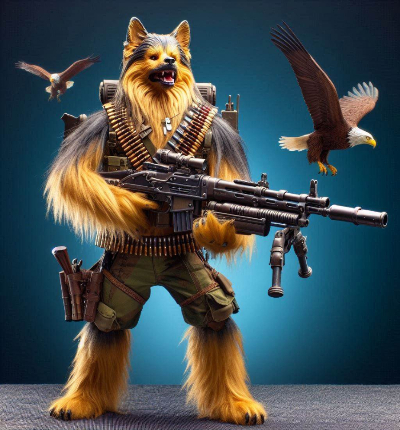
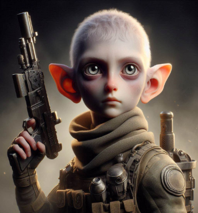
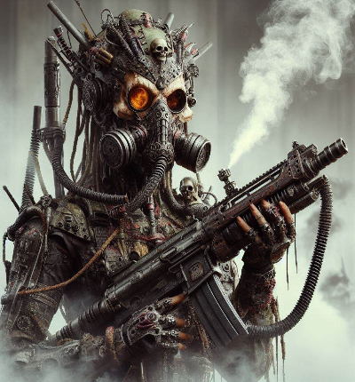
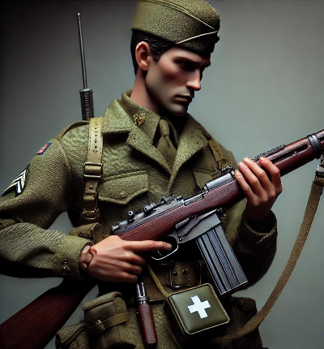
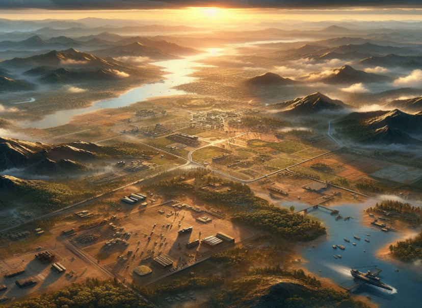

BulletStorm - Detalles del Juego
Razas y Habilidades
-
Perruno:
Esta raza feroz lleva una ametralladora montada y tiene la capacidad de disponer de un águila, brindando así una ventaja táctica en el campo de batalla.

-
PsicoticKid:
Un niño prodigio con una pistola que puede crear ilusiones, confundiendo a sus oponentes y abriendo el camino para ataques estratégicos.

-
Smoker:
Parecidos a los humanos pero incapaces de respirar oxígeno, los Smoker lanzan gases tóxicos en el campo de batalla, utilizando su ametralladora para dominar a sus enemigos.

-
Humanos:
Con un fusil de cerrojo y una pistola automática, los humanos son versátiles y están equipados con botiquines y granadas, lo que les permite adaptarse a diferentes situaciones de combate.

Características Principales
- Modo multijugador con equipos de hasta 6 jugadores.
- Armas personalizables y habilidades únicas para cada personaje.
- Mapas interactivos con eventos dinámicos que alteran el campo de batalla.
- Actualizaciones para agregar contenido semanales.
-
